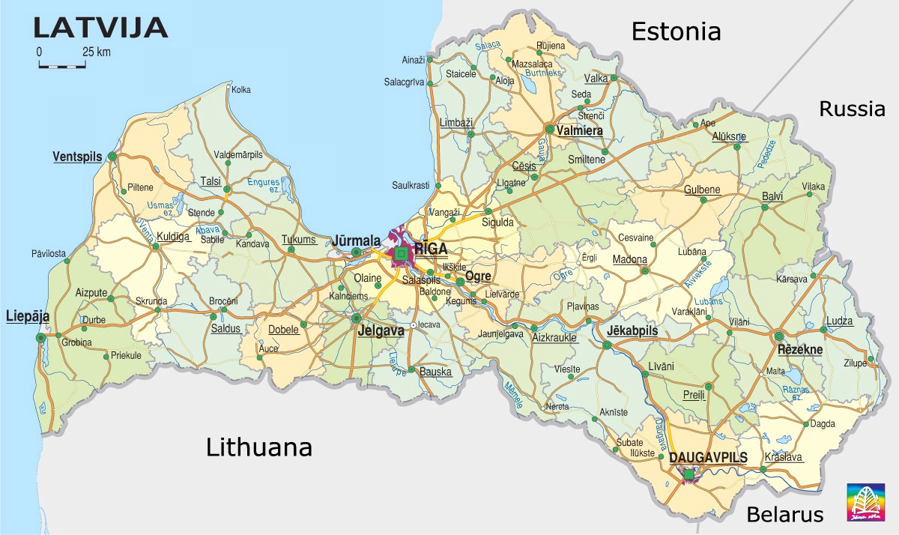
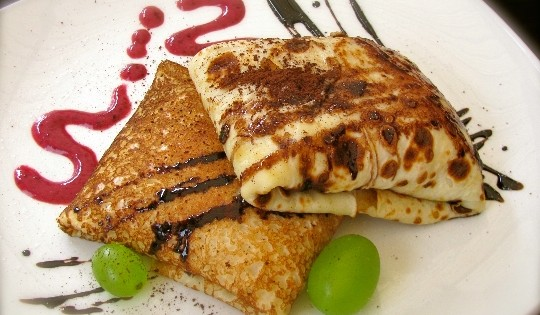
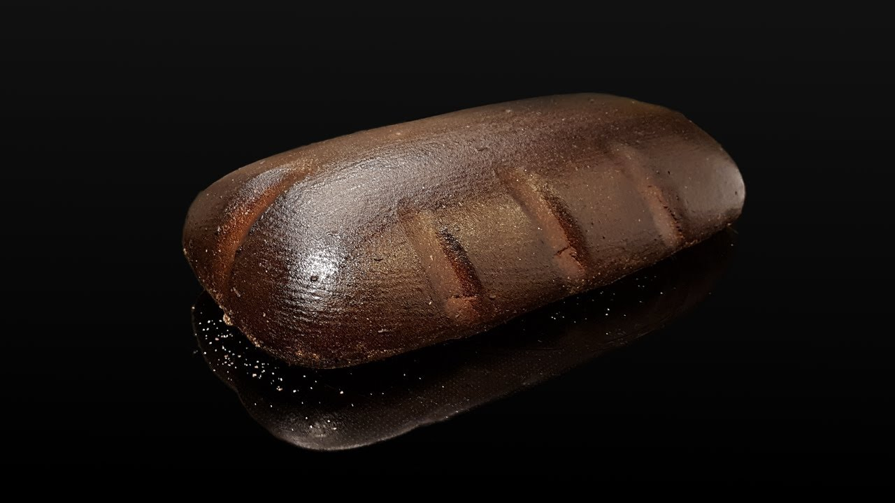
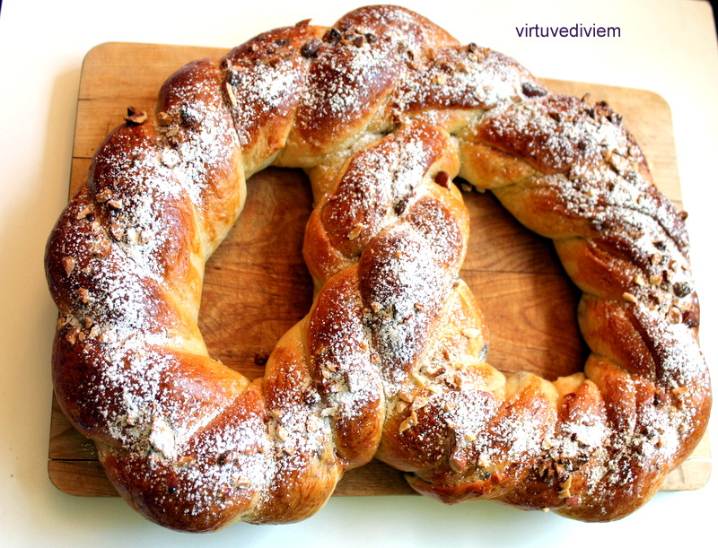
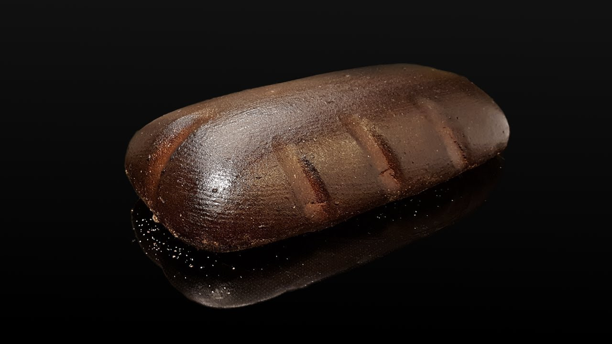
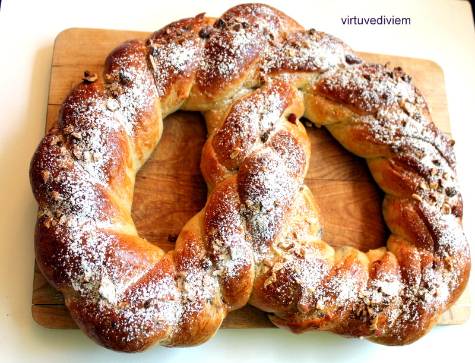

Adesão à UE
A Letónia teve a sua adesão à União Europeia no dia 1 de maio de 2004.
Moeda
O pais tornou-se membro da zona euro no dia 1 de janeiro de 2014, passando o euro a ser a sua moeda

A cozinha letã baseia-se tipicamente em produtos agrícolas, encontrando-se a carne presente na maior parte dos pratos de refeição. O peixe é comummente consumido devido à localização da Letónia na costa leste do Mar Báltico. A cozinha letã tem sido influenciada pelos países vizinhos da região Báltica. Os ingredientes comuns nas receitas letãs são encontrados localmente, como a batata, trigo, cevada, couve, cebola, ovos e carne de porco. A comida letã é em geral bastante gorda e utiliza poucas especiarias.
Os letões de hoje em dia consomem normalmente três refeições por dia. O pequeno-almoço é normalmente leve e geralmente consiste em sandes ou numa omelete, com uma bebida, geralmente leite. O almoço é consumido entre o meio-dia e as três da tarde e tende a ser a principal refeição do dia. Como tal, pode incluir uma variedade de alimentos e por vezes também uma sopa como entrada e uma sobremesa. A ceia é a ultima refeição do dia, com alguns escolhendo consumir outra refeição pesada. O consumo de refeições prontas ou congeladas é hoje comum.
Batatas e carne são geralmente considerados alimento básico dos letões. Geralmente as sopas são feitas com verduras e leite. Sopa de massa, sopa de beterraba e sopa azeda são também consumidas pelos letões. Um queijo tradicional letão é o Jāņu siers (queijo de cominhos), este é tradicionalmente servido durante a celebração do solstício de verão Jāņi. Há também a versão letã de do smorgasbord, o Aukstais galds. A Letónia tem uma versão original do pīrāgi, em que são cozidos. O kvass é frequentemente considerado como uma bebida tradicional da Letónia, no entanto, é bastante popular em países vizinhos, sendo por isso difícil determinar a sua origem. As bebidas alcoólicas mais populares são a cerveja, a vodka e o balzam (balsamo). A Chucrute refogada é uma preparação de alimentos que foi herdada dos alemães na região letã. Os picles de cogumelos são outra especialidade letã
 (O queijo tradicional letão, Jāņu siera)
(O queijo tradicional letão, Jāņu siera)
O Rupjmaize é um pão escuro feito à base de centeio, sendo considerado básico na comida nacional.

‘’Kliņģeris’’ é um pão doce em forma de pretzel que normalmente é servido como sobremesa em ocasiões especiais, tais como o Dia do Nome.

Gastronomia
A cozinha letã baseia-se tipicamente em produtos agrícolas, encontrando-se a carne presente na maior parte dos pratos de refeição. O peixe é comummente consumido devido à localização da Letónia na costa leste do Mar Báltico. A cozinha letã tem sido influenciada pelos países vizinhos da região Báltica. Os ingredientes comuns nas receitas letãs são encontrados localmente, como a batata, trigo, cevada, couve, cebola, ovos e carne de porco. A comida letã é em geral bastante gorda e utiliza poucas especiarias.
Refeições
Os letões de hoje em dia consomem normalmente três refeições por dia. O pequeno-almoço é normalmente leve e geralmente consiste em sandes ou numa omelete, com uma bebida, geralmente leite. O almoço é consumido entre o meio-dia e as três da tarde e tende a ser a principal refeição do dia. Como tal, pode incluir uma variedade de alimentos e por vezes também uma sopa como entrada e uma sobremesa. A ceia é a ultima refeição do dia, com alguns escolhendo consumir outra refeição pesada. O consumo de refeições prontas ou congeladas é hoje comum.
Alimentos e pratos comuns
Batatas e carne são geralmente considerados alimento básico dos letões. Geralmente as sopas são feitas com verduras e leite. Sopa de massa, sopa de beterraba e sopa azeda são também consumidas pelos letões. Um queijo tradicional letão é o Jāņu siers (queijo de cominhos), este é tradicionalmente servido durante a celebração do solstício de verão Jāņi. Há também a versão letã de do smorgasbord, o Aukstais galds. A Letónia tem uma versão original do pīrāgi, em que são cozidos. O kvass é frequentemente considerado como uma bebida tradicional da Letónia, no entanto, é bastante popular em países vizinhos, sendo por isso difícil determinar a sua origem. As bebidas alcoólicas mais populares são a cerveja, a vodka e o balzam (balsamo). A Chucrute refogada é uma preparação de alimentos que foi herdada dos alemães na região letã. Os picles de cogumelos são outra especialidade letã
(O queijo tradicional letão, Jāņu siera)
Pão
O Rupjmaize é um pão escuro feito à base de centeio, sendo considerado básico na comida nacional.
‘’Kliņģeris’’ é um pão doce em forma de pretzel que normalmente é servido como sobremesa em ocasiões especiais, tais como o Dia do Nome.
